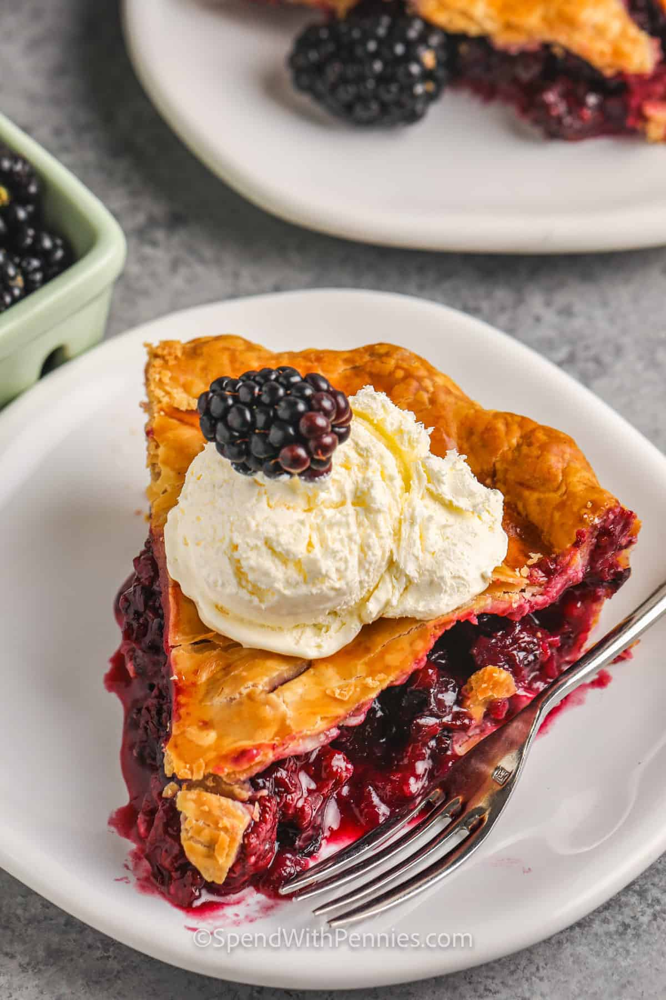

Homemade Blackberry Pie
Home

Description
This classic recipe has a fresh, juicy blackberry filling nestled inside a buttery flaky crust. Perfect for any occasion, this pie is as delicious as it is easy to make.
Ingredients
- 5-6 cups blackberries (fresh or frozen)
- 1/2 cup granulated sugar
- 3-4 tablespoons cornstarch
- 1/4 teaspoon cinnamon
- 2 tablespoons butter
- 1 9 inch pie crust
- 1 egg yolk
Steps
- Preheat oven to 375 F
- Line pie plate with pie crust
- In a large bowl, gently toss blackberries, sugar, cornstarch, and cinnamon together. Pour into the pie crust. Cut up the butter and dot it over the berries.
- Roll the remaining crust and place over top of the pie. Cut the crusts to the edge of the pie plate and gently fold the edges to seal.
- Whisk the egg yolk with 1 tablespoon of water and brush over the pie.
- Place the pie plate on a large baking pan (lined with parchment paper if you'd like) and bake for 45-55 minutes or until the crust is golden and the filling is bubbly.
- Remove from the oven and place on a cooling rack. Cool at least 4 hours at room temperature.